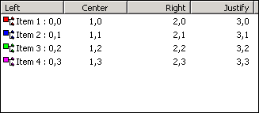
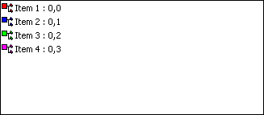
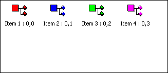

WEL_LIST_VIEW
A WEL_LIST_VIEW control is an encapsulation of the Windows List View control and provides several ways of displaying
a collection of items. Each item can consist of a text and an icon. Certain styles allow additional information to be displayed
in columns to the right of the icon and label.
Appearance
A WEL_LIST_VIEW with the Lvs_report style.

A WEL_LIST_VIEW with the Lvs_list style.

A WEL_LIST_VIEW with the Lvs_icon style.

A WEL_LIST_VIEW with the Lvs_icon_small style.